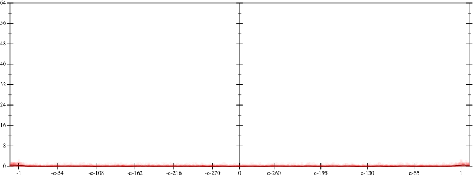
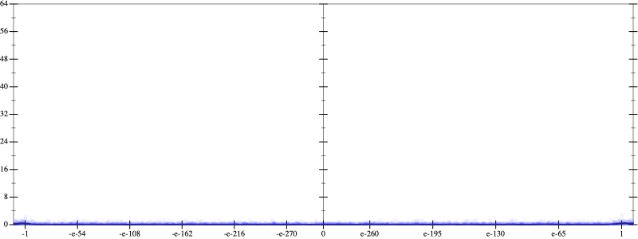
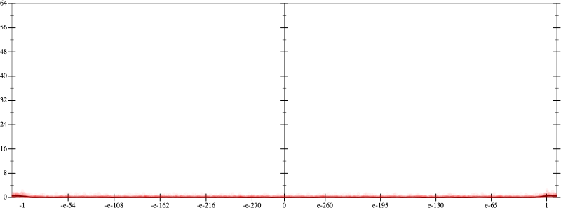
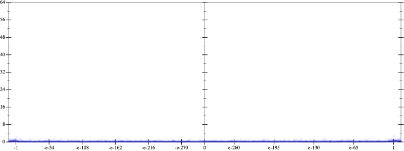

Initial program 0.1
\[\left(120.0 \cdot x + -160.0 \cdot \left(\left(x \cdot x\right) \cdot x\right)\right) + 32.0 \cdot \left(\left(\left(\left(x \cdot x\right) \cdot x\right) \cdot x\right) \cdot x\right)\]
- Using strategy
rm Applied pow30.1
\[\leadsto \left(120.0 \cdot x + -160.0 \cdot \left(\left(x \cdot x\right) \cdot x\right)\right) + 32.0 \cdot \left(\left(\color{blue}{{x}^{3}} \cdot x\right) \cdot x\right)\]
Applied pow-plus0.1
\[\leadsto \left(120.0 \cdot x + -160.0 \cdot \left(\left(x \cdot x\right) \cdot x\right)\right) + 32.0 \cdot \left(\color{blue}{{x}^{\left(3 + 1\right)}} \cdot x\right)\]
Taylor expanded around -inf 62.9
\[\leadsto \left(120.0 \cdot x + -160.0 \cdot \left(\left(x \cdot x\right) \cdot x\right)\right) + 32.0 \cdot \color{blue}{\left(e^{4 \cdot \left(\log -1 - \log \left(\frac{-1}{x}\right)\right)} \cdot x\right)}\]
Applied simplify0.1
\[\leadsto \color{blue}{\left(\left(-160.0 \cdot x\right) \cdot \left(x \cdot x\right) + {x}^{4} \cdot \left(x \cdot 32.0\right)\right) + 120.0 \cdot x}\]
 
